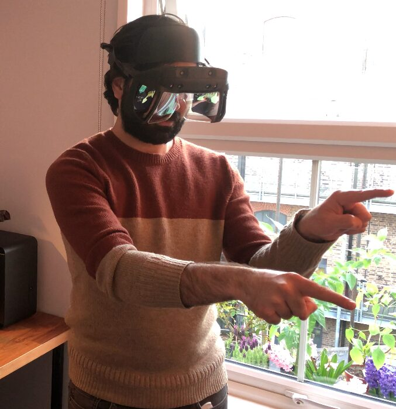
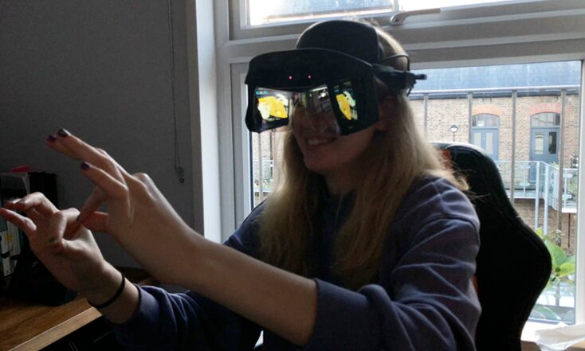
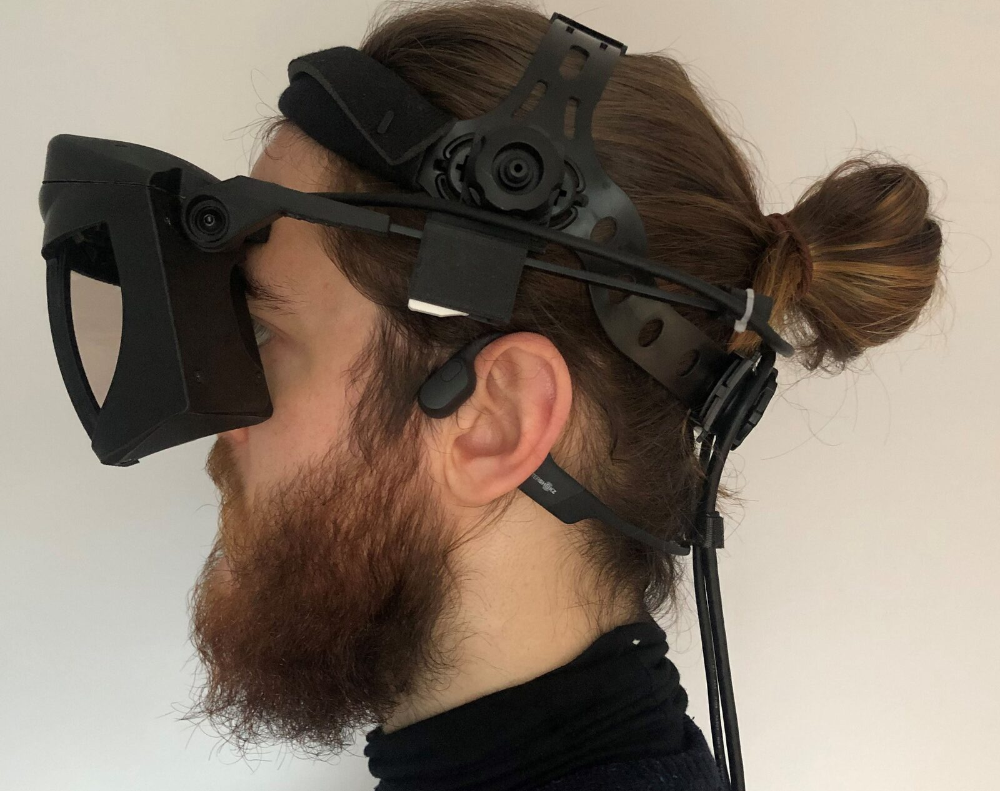
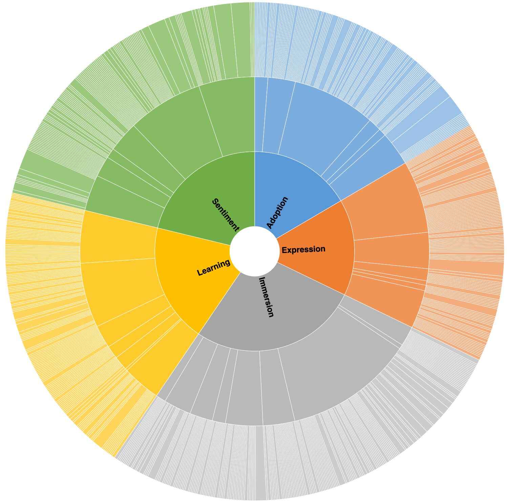

Evaluating polaris\~ - An Audiovisual Augmented Reality Experience Built on Open-Source Hardware and Software
Abstract
Augmented reality (AR) is increasingly being envisaged as a process of perceptual mediation or modulation, not only as a system that combines aligned and interactive virtual objects with a real environment. Within artistic practice, this reconceptualisation has led to a medium that emphasises this multisensory integration of virtual processes, leading to expressive, narrative-driven, and thought-provoking AR experiences. This paper outlines the development and evaluation of the polaris~ experience. polaris~ is built using a set of open-source hardware and software components that can be used to create privacy-respecting and cost-effective audiovisual AR experiences. Its wearable component is comprised of the open-source Project North Star AR headset and a pair of bone conduction headphones, providing simultaneous real and virtual visual and auditory elements. These elements are spatially aligned using Unity and PureData to the real space that they appear in and can be gesturally interacted with in a way that fosters artistic and musical expression. In order to evaluate the polaris~, 10 participants were recruited, who spent approximately 30 minutes each in the AR scene and were interviewed about their experience. Using grounded theory, the author extracted coded remarks from the transcriptions of these studies, that were then sorted into the categories of Sentiment, Learning, Adoption, Expression, and Immersion. In evaluating polaris~ it was found that the experience engaged participants fruitfully, with many noting their ability to express themselves audiovisually in creative ways. The experience and the framework the author used to create it is available in a Github respository.
Author Keywords
augmented reality, audiovisual composition, gestural performance, user study
CCS Concepts
•Human-centered computing → Mixed / augmented reality; User studies;
•Applied computing → Sound and music computing
Augmented Reality in Computational Art
In the last twenty years, computational technology has become increasingly expressive, and the systems we engage with have become more interactive. Due to this, the arts (especially forms of sound-driven digital art) have embraced new technologies in tandem with, and often contributing to, their development. This has led to more human-centred and DIY methods of designing tools for digital art creation, often leading towards more performative and experimental interactions. Among the technologies that have seen nascent use in the arts is augmented reality (AR), typically defined as a system that (1) combines real and virtual elements, (2) is interactive in real time, and (3) is registered in 3-D [1]. Despite a broad set of criteria, the paradigmatic form of AR in recent history has typically been an interface that overlays content onto a participant’s visual field.
In an attempt to break free from such limitations in the context of human-centred design, Mann argues for the term “Mediated Reality” [2], emphasising that these experiences can offer more than layered content in front of us, rather, that they have the potential to completely mediate our perceived reality. Schraffenberger also sought to address this seemingly sticky archetype of AR simply being “layered information”, by setting out her “Subforms of AR”: extended, diminished, altered, and hybrid reality, and the concept of extended perception [3]. Similarly, but in the field of experimental music research, and practice of interactive sound installation, Chevalier and Kiefer recognise AR as “real-time computationally mediated perception” [4]. The emphasis by all four on the mediation of perception, not only resituates AR to include immersive experiences that provide more than just layered content, but also empowers AR applications that engage the non-visual senses, due to the multisensory nature of human perception.
As a digital musician, this reconceptualisation has been instrumental in my viewing AR as a medium for the creation of immersive, multisensory experiences and interfaces for musical expression. Coming to AR experience design through an artistic DIY approach liberates AR from consumer technologies (and their visual biases), which are often prohibitively expensive, require developers’ licenses, or agreement to privacy policies, such as Microsoft’s Hololens 2, Magic Leap’s ML-1, or Facebook/Oculus/Meta’s Quest 2. In my practice, these points of resistance (wanting to push past the paradigms of ocularcentrism 1 and layering in AR and engaging with technologies that are cost-effective and privacy-respecting), have led to my finding several hardware and software solutions that have been used in the creation of the polaris~ experience.
The objective of this research is to evaluate polaris~ as an AR experience for its ability to provide a space for gestural audiovisual expression, primarily through a user study, and later using the grounded theory method to extract relevant themes from participant interactions. The outcome of this research will eventually be a set of multisensory AR design guidelines: developed via iteration based on themes that are found in the analysis of participant experiences, and autobiographical design remarks [5]. At present, the experience is available online to download, along with the framework used to create it.
Design Framework
The polaris~ experience itself is built using mostly open-source hardware and software. As well as creating the experience, I was interested in keeping a log of its framework in order to ensure its reproduceability and to facilitate further creation of a wide variety of audiovisual AR experiences. Any ‘artist-developer’ 2 wanting to work on similar experiences should have the ability, when following this framework, to rapidly create and prototype low-cost and privacy-respecting multisensory AR artworks, experiences, and instruments. This section details the framework, but additional information can be found on Github and my website.
polaris~ Hardware
Project North Star


Project North Star being used to play a virtual piano
The primary section of wearable hardware is the Project North Star (NS) AR headset, as open-sourced by LeapMotion (now Ultraleap) in 2018. It has a 3D-printable assembly, and its circuit boards, cables, and screens are available to buy online; my North Star cost about £500 in total to build - 5 to 6 times less expensive than the commercial AR headsets mentioned, while maintaining industry-leading hand-tracking and 6DoF (6 degrees of freedom) depth tracking.


Project North Star being used to resize and move around virtual objects in the environment
However, the time needed to build one and understand its workings well enough to troubleshoot any issues one faces may be a barrier to entry 3. Additionally, the finish material is not as polished as commercial headsets, and the overall size is larger and clunkier. It also needs to be tethered by USB and DisplayPort cable to a host computer or mobile compute pack.
Despite these drawbacks, my own experience of the headset has led to the rapid creation of many audiovisual AR prototypes. The fact that it requires no account to use, no developer’s license to work with, and no data to be sent away to corporate servers has only added to my comfortability of using it as a creative tool.
Bone Conduction Headphones


Project North Star headset worn with the addition of bone-conduction headphones
The secondary piece of hardware in the system is a pair of bone-conduction headphones. These have been used as a method of auditory display in several other AR projects [6][7][8], typically for their ability to deliver audio in an unobtrusive fashion, as well as their comfortability and cleanliness in installation settings. They do not obscure the wearer’s hearing of their real environment, making them suitable for emphasising the intertwined nature of virtual and real components of an AR experience.
polaris~ Software
Unity
polaris~ uses an open-source software companion to the NS headset developed and maintained by Damien Rompapas [9]. At run-time, this Unity plugin (also making use of Ultraleap’s Hands plugin) computes sensor readings from both the hand- and movement-tracking sensors and recreates the hand and headset pose in real-time inside the Unity scene. With the pose computed, it outputs the resultant view to the displays of the headset, rendering anything in the Unity scene relative to it.
Thanks to Unity’s in-built audio spatialisation, any audio sample attached to an object in the Unity scene is, by default, spatialised in 3D and output via the bone-conduction headphones.
PureData
In my own research, the desire to implement more than just sample-based audio interactions led me to experiment with many different options for implementing real-time audio synthesis. I ranked each option I found by its ability to fulfil the below criteria: (a write-up can be found on my website)
Uses Unity’s in-built audio spatialisation.
Low computational cost on the host computer, and ability to be instantiated tens to hundreds of times procedurally.
Ability to afford the artist-developer a wide palette of synthesis techniques.
Allowing real-time parameter control of sounds via movement, gesture, and interaction with GameObjects in the Unity scene.
Ability to rapidly prototype sound synthesis techniques and sonic interactions.
Being free, open-source, and cross-platform.
Meeting all these requirements was the LibPdIntegration project developed and maintained by Niall Moody and Yann Seznec. It allows for the use of PureData patches in Unity, which, at run-time, are compiled to libPd (an embeddable version of PureData), and whose output is fed in real-time to the sound output of the GameObjects they are attached to 4.
To summarise, the use of the North Star companion software in conjunction with LibPdIntegration, allows for the creation of objects in an AR scene that can have their own PureData patches. These can be parameterised to gesture, movement, and interaction, in ways that manipulate their audio synthesis in real-time and at low computational cost. This all while existing three-dimensionally in the participants’ visual and auditory fields. The fact that this is delivered via an optical-see through headset and bone-conduction headphones results in an experience that does not significantly hinder (compared to VR) the participants’ ability to see and hear their real environment - augmenting reality rather than replacing it.
Study Design
In 2021, I ran a participant experience study of polaris~, the first experience I created with the above framework. The main objective of the study was to extract (via grounded theory) participant sentiment towards their ability to audiovisually express themselves through gesture and movement in the AR experience. Participants were recruited via university mailing-list, and were a mix of undergraduate and postgraduate Media, Film, and Music students.
Questionnaire
Participants completed a questionnaire, in which I asked for their age, gender identity, ethnicity, and occupation, to ensure a diverse and inclusive variety of participants. The mean age was ~24.7 years old, with a range between 19 and 37; there were 6 female and 4 male participants, belonging to a diverse group of ethnicities.
Tutorial
The participants were inducted into the experience via an introductory five-minute tutorial, the purpose being to ensure safety, build trust, and allow space for questions before beginning. This took the form of a narrated slideshow, in which I outlined the devices and interactions they should expect in the experience.
The polaris~ Experience
Once the participant was wearing the headset and headphones, confirmed they were comfortable and they were standing in the starting position 5, I began the Unity scene (a full demonstration of the scene can be found on my YouTube channel), and let them know that the experience was about to start.
The experience involved nine floating iridescent ‘orbs’, scattered at different distances from the starting position. The orbs would individually emit a repeating tone, whose pitch and tempo varied from orb to orb. Upon emitting a sound, the orb would eject a shower of white particles.
Through-lens footage of the floating orbs in the AR scene. Watch on YouTube.
Participants were invited to explore the space at their own pace. They could, of course, view the orbs from different angles, and hear their tones get louder and quieter as well as panning from ear to ear as they walked around them.
I then prompted them to direct their gaze towards their hands, which were outlined, and when turning the left hand to face them, a menu appeared to the right of their palm. The menu contained two buttons, one labelled “Change Hand Colour”, the other “Toggle Interactions”. I prompted them to tap the top button, which upon depressing slightly and providing an auditory ‘click’, changed the colour of their hand’s outline.
Through-lens footage of the hand outline, menu, and button activation in the AR scene. Watch on YouTube.
Upon toggling the second button on, constant streams of particles started emitting from the centre of their palms. These particles persisted for approximately five seconds to conserve computational power. While the button was toggled on, and the streams were emitting, each hand also produced a continuous noise.
In addition to these interactions, a total of five further interactions existed in the experience. The first two concerned the position, orientation, and gesture of the hands, relative to the participant. Firstly, they could modulate the depth of a vibrato effect on the sound of the particle stream by gradually turning their palms towards their face. Secondly, they could affect the sound’s filter cut-off frequency by pinching their fingers together into a point, resulting in a hissing sound; paired with the visual feedback of narrowing the particle stream.
Through-lens footage of the pinch gesture’s effect on the particle streams in the AR scene. Watch on YouTube.
On pointing their palms in the direction of an orb, the particles would gravitate towards the orb, and begin to slow down, orbit, and rotate it. Depending on which palm was pointing towards the orb, there would be an additional effect that increased in intensity as the participant persisted in pointing towards the orb. When pointing their left palm, over the course of 20 seconds, the orb’s tone and white particle burst increased in tempo. When pointing their right palm towards an orb, over the course of 5 seconds, the depth of a tremolo effect on that orb’s tone increased, with the paths of the white particles emitted from the orb becoming more erratic and corkscrew-like.
Through-lens footage of the orb’s gravitational effect on the hand particles in the AR scene. Watch on YouTube.
Exploration of the scene differed between participants, but once they had either found or been shown the interaction methods in the scene and had either explored their variety or asked if there was anything else that they could do, I would ask them to try some experimental interactions.
Taking advantage of the vast number of parameters available to edit in Unity, I then changed elements of the visual 6 experience in real-time, asking for participant feedback on elements they preferred, and why. These elements of visual experience involved the orbs size, shape, gravity strength, and range; particle size, speed, lifetime, and colour.
Artificial composite 3rd and 1st person views of a participant drawing in mid air during the experimental section, note the scene gravity being turned on. (P09) Watch on YouTube.
Interview
The next step of the study was a 10-minute interview, in which I asked participants about the positive and negative aspects of the experience, and anything they could suggest that would improve the experience. Questions were left deliberately broad due to the use of grounded theory to draw out themes for later analysis. I used a topic guide (see Appendix 1) to keep follow-on questions for replies related to the experience. This was in the form of a set of questions from the validated questionnaire titled “User Experience in Immersive Virtual Environments” by Katy Tcha-Tokey et al. [10], which I adapted to suit AR.
Participant Feedback
Grounded Theory
I chose the constructivist strand of grounded theory as developed by Kathy Charmaz [11] (building on the initial work by Glaser and Strauss [12]) for my method of data analysis due to its ability to build theories from gathered data. Generally, generating a grounded theory extracts relevance from ‘codes’ - line-by-line summaries of transcribed speech, that are then iteratively and repeatedly refined, and sorted into categories. This contrasts approaching data collection with a specific hypothesis in mind.
In the constructivist version of the Grounded Theory method, rather than assuming emergence of ‘unproblematic’ and ‘objective’ categories from the data itself, categories are admitted to being ‘mutually constructed’ through interaction by the researcher with the data, considering and highlighting both the position and subjectivity of the researcher, as well as the partiality, and situational nature of the data itself.
In this instance, a study where I set out to evaluate the experience of participants in an audiovisual AR scene, I believed that it was suited to provide a rich set of data from which to critique and iterate the experience, and eventually build a set of multisensory AR design guidelines.


5 categories, 37 subcategories and ~700 codes visualised in NVivo.
Transcribing the nearly 7 hours of experiences and interviews, lead to 45,858 words, and approximately ~700 individual codes in the qualitative research software NVivo. These were sorted into 37 subcategories, with a total of 5 categories.
Sentiment
Included in this category are emotions elicited by the experience, the majority of which were related to novelty. Participants felt a mixture of emotions, most frequently wonder or awe at the visual components of the scene, and enjoyment of the scene components and the interactions with them.
One participant felt fixated by the experience: “I am quite obsessed by this button” (P09), whilst another felt satisfaction: “Like a fascination, wonder, it was quite satisfying as well” (P03).
All participants made ample use of simile and metaphor, likening visual elements to liquid, snow, fire, fireworks, magic, and confetti. The sound design was said to be “ocean-like” (P07) or “wind-like” (P01), and participants expressed similarities in their experience to ‘being in’ movies such as Minority Report, Enter the Void, and Star Wars.
Learning
From this category of codes, is clear that the experience involved an element of learning different functions and abilities. One participant remarked: “I was unsure, and I didn’t know what would lead to a change in what I did, but after a point I understood” (P06). Another linked learning as resulting in immersion: “Each step that you learn something new about what you can do in that environment, that’s when you become more and more immersed” (P09).
Adoption
This category includes codes that referred to issues that could be a barrier to using the technology, recommendations for different utilisations of audiovisual AR, and codes relating to safety and accessibility implications of adopting AR.
Comfort and Fit
8 out of 10 participants struggled with the fit of the headgear on the Project North Star not being tight enough. As a result, some participants had to hold the headset with one hand throughout the experience. One participant expressed that this “stood as a hurdle to [the] experience” (P01), and another specified how this affected their involvement with experience in more detail: “[Discomfort] doesn’t ruin it, but it definitely brings me back to reality really quickly” (P10).
Alignment and Tracking
Related to the above, were codes that referred to issues with alignment of content onto the real environment, such as the floating orbs and the outline of the hands. These were a product of the sensors, lighting, and content of the lab space. One participant even described the slight delay and misalignment of the hand outline as “trippy” , going on to say that they “sort of like that it’s a bit out” (P01).
Uses of AR and comparisons to other media
A wide variety of possible uses of audiovisual AR were highlighted by participants, including communication, conveying certain messages by highlighting important subject matter, art and music, virtual worlds, and video games.
One participant, who studies Media for Development and Social Change and works with environmental NGOs, remarked that using audiovisual AR could help generate more interest in environmental conservation, because experiencing AR made them feel “for some reason I act like this [virtual content] is more real than it is”, going on to say that “rather than just watching it on the screen, you’d be more integrated” (P06).
Another participant, studying on the same course, considered the use of AR in the documentation of the lived experiences of vulnerable people, such as refugees. They emphasised that compared to traditional media formats, AR was more “interactive”, and that this could help in “angling the participant to be in touch with the subject more” (P01), possibly helping raise awareness of vulnerable people without tokenising their lived experience.
Several other participants described the potential uses of AR in artistic and musical contexts like polaris~. One participant said that AR had the potential to allow musicians to “easily feel” and “play [...] with sounds” (P02). One participant said that they could see AR being used for both instrument-building and creating installations (P03).
Safety and Accessibility
On the topic of safety, one participant expressed that despite “[feeling] like there will be lots of benefits for [the uptake of AR and VR]”, they believed that it could lead people to “lose track of reality” (P07). Overall, participants reacted positively to the fact that their concerns over the comfortability and fit of the headset would be able to be addressed thanks to the open-source nature of the North Star’s design.
Expression
Participants expressed themselves in various ways during the AR experience, and most described the ability to create visual and sonic components with their hands as the most compelling aspect of this expression. For example, one participant appreciated the variety of visual and sonic patterns that they could create: “when your hands are together, it made one style of shape, and when your hands were away it would make different styles that affected the music” (P07), another emphasised variety as well as exploration: “[The experience] let me explore by using my hands [and] doing different gestures” (P06).
Artificial composite 3rd and 1st person views of a participant using their hands to interact with the floating orbs. (P01) Watch on YouTube.
Accordingly, several participants expressed their ability to act in the scene as “control” or “power”. One participant, almost sounding guilty, said: “I mean, it sounds weird, but I felt, like, very powerful” (P10). Another, remarked similarly: “I think once I realised that I had the power to add things, I didn’t let go of that” (P03).
While one participant remarked that “physically doing something [that] you can see the effect of” resulted in a feeling of “control” (P07), another participant noted that they didn’t always feel this: rather, that this might grow over time and with increased familiarity of the scene, reinforcing the suggestion of a learning process in the experience (P03).
Closely related to these codes were ones where participants expressed their wish to have more power and control over the scene, or that they had wished for different outcomes. Most common was the wish to be able to move the orbs around themselves (P03, 06, 09) or the ability to change elements as I had done in the experimental part of experience themselves, and at their own leisure (P05, 07, 09, 10).
One participant agreed that adding further visual indicators for the effects being had on the sound would help them notice these changes. The same participant commented that the pinching gesture used to tighten the stream of particles from the hand was unintuitive and would have preferred it to be a pointing gesture (P02).
Immersion
Awareness
Most participants reported that they felt aware of their real-world surroundings during the experience, one commenting that it was “because you could still see everything, you could still hear” that they didn’t get “lost” in the experience (P07). However, one of the participants was adamant that they had “lost track of reality” during the experience, and that it had felt “like [they were] in another environment” (P09), another still, observing that there were moments when they forgot where they were (P10). It’s clear then, that the experience immersed the participants, some more than others. When asked to offer a rationale for their feelings of immersion, participants pointed to several factors.
Sights
One participant noted that they felt more immersed by the visual components of the scene, but that they would have felt less immersed if there wasn’t an auditory component to the experience (P10). When being immersed by visual elements, for some it was colours that maintained this sense of immersion, with one participant commenting that the “vividness” (P08) and size of the colours when particles had been made larger in the experimental section is what led to the moments of highest immersion in their experience.
Sounds
On the topic of immersion through audio, one participant put this down to the feeling of being “submerged” in different layers of three-dimensional sound (P01). Similarly, many of the participants confirmed or independently reported to be able to discern and localise the tones they heard from different orbs around them, with some doing this by exploring through movement (P07), and others taking the visual cue of the white particle burst (P03). One participant remarked that the sound was the “main aspect” of immersion for them, and that it made them “feel like part of” the experience (P04); another commented that the sound “surrounded” them and held their concentration so much that they almost forgot that they were wearing the bone-conduction headphones (P02). For another still, it was the activation of one of the orbs’ sound effects that made them feel part of the experience (P03).
Actions
A participant remarked that it was the feeling of “creating” that led to their immersion. Additionally, they remarked that it was the “element of play” in the interaction between particles and orbs that had immersed them in the experience; further noting that it was the way that the particles “emerged” from their hands that kept them engrossed (P09). On playfulness and fun, another participant commented that it was the fact that they could interact with content that wasn’t “there” which was the most fun for them (P05).
Physicality of Content
One participant reported multiple times that they could “feel” the button when they pressed it (although technically it was floating adjacent to their hand in mid-air). They agreed that it could be the mixture of the feedback sound, volumetric threshold trigger, and lighting that led to this effect (P09).
Another participant, upon placing their hands close to an orb remarked: “I know there’s nothing there, but when I put my hand [towards the orb] I feel like I’m going towards something warm”. This same participant expressed a keen interest during the experimental section in drawing large three-dimensional sculptures. During one of these drawings, the participant walked around their creation, and then took a moment before exclaiming: “Oh! I forgot that it wasn’t a real thing, I kept trying to go [around] it, but I could just go through it!”. Later, they noted: “I guess it’s about our brains. [...] When we see it in 3D we automatically think it’s more real than [if it were on a screen]” (P08).
Conclusion
Overall, the AR experience engaged participants fruitfully, with many noting their ability to express themselves audiovisually in creative ways. For polaris~, the ability to do so whilst maintaining a privacy-respecting and cost-effective focus, is a testament to the individual components of the framework used to create it, and the labour that has facilitated the development of these open-source solutions.
The categories of codes extracted from the grounded theory analysis have resulted in a rich set of data. From those related to participant sentiment, it’s not only clear that the audiovisual AR experiences are able to elicit a wide variety of emotions, but that to explain and make sense of them participants often made use of metaphors and past experiences. The fact that it was expressed multiple times by participants that the experience was one that they’d never had before might be a way of accounting for this variety and overlap of emotions.
Relating to the category of learning, it’s clear that participants sensed this from multiple aspects of the experience, with one pointing towards the dimensionality, and others pointing towards the interactive elements and the need to explore the scene. For one participant there was a connection between learning and immersion. Within the context of musical interfaces, this could be taken to show that viewing the participant as a learner in the experience could lead to a deeper level of engagement.
Within the category of adoption, the fact that the headset lacked a good fit for most participants was clearly what detracted from the experience most. It led not only to a reduction in experience immersion, but also to a lessening of comfort and the knock-on effect of muscle fatigue and inability to exercise full agency for some participants. From the comments on different potential applications for AR, it is clear that the offer of deeper interaction with subject matter, increased immersion in an experience, and the sense of “feeling” or “playing” with virtual content has led to participants envisaging AR’s utilisation in several artistic and musical contexts. Notable was the suggestion that these facets of experience, especially that of the three-dimensional and context-specific sounds, could be employed to convey messages of socio-ethical importance as well as aesthetic experience. It is important to mention that some participants warned of negative side-effects or the potential for negative experiences in AR, showing the importance for a safety-minded approach to designing such AR experiences.
From the codes relating to self-expression and control, participants appreciated the ability to interact with their bare hands, and felt that this was the main contributor to their expression in the scene. This, for some, led to a feeling of power, and for some, a feeling of control over elements of the scene. For others, the feeling of control wasn’t entirely certain, with some noting that the scene had agency of its own. It is also conclusive from these codes that some participants desired more control over the scene, although implementing this would have to be done thoughtfully, without overloading the scene with content and parameters to change.
Immersion tended to stem from the fact that the elements of the experience: sights, sounds, and actions were spatialised in three dimensions. Participants enjoyed and felt immersed by the movement and colour of the visual elements and were able to discern and localise the source of different sounds in the experience; several noting that this element was the most immersive factor for them, whilst others preferred the visual elements. Others still, noted that the actions that they employed, gestural and movement-based are what immersed them in the experience most, and for some, this led to the virtual content of the scene feeling physical at times.
Artificial composite 3rd and 1st person views of a participant expressing themselves in the scene, and viewing their creation from different angles. (P08) Watch on YouTube.
Future Work
While the above analysis is not, on its own, sufficient to draw conclusive guidelines for design, it does shed light on several connections between elements of this specific experience: learning, comfort, safety, spatial perception, visual-, sonic-, and action-led immersion, and physicality of virtual content. In the future, I would like to focus on these themes, and consider how they, as well as new developed experiences, might contribute to a set of multisensory AR design guidelines. Indeed, the framework used to create polaris~ has already been used in the creation of several experimental audiovisual AR performances.
Experimental Audiovisual AR Performance. Watch on YouTube. (strobe warning)
To improve on the comfortability of the experience, the first changes I made were to design an alternate headgear section for the headset. Over the course of a day, I collaborated with another NS community member on 3D printable designs that would allow the quick and easy substitution of the main headgear piece for a smaller one that was more accomodating of smaller head sizes.
I would also like to make the gestures and feedback for the orb-based sound effects more intuitive, reachable, and musical, as most participants relied on my showing them before they understood that it was a possibility in the scene. This could be done by conducting a trial with musician participants with which to iteratively develop these new interactions.
On the basis of the codes related to learning, I would like to experiment with an implementation of increasingly interactive and musical “levels”, both to reduce overwhelm when starting the scene, and to provide participants with a simple course through which to learn functions and express themselves accordingly.
Acknowledgements
This research was funded by the Leverhulme Doctoral Scholarship Programme: “Sensation and Perception to Awareness”, at the University of Sussex.
Ethics Statement
The study followed University of Sussex ethics guidelines approved by the Social Sciences & Arts Cross-Schools Research Ethics Committee with the reference code: ER/SMB44/3.
Socio-economic fairness
At all stages of this research, I have sought to minimise the outlay required to invest in technology needed to implement polaris~. This has meant opting for FLOSS (free / libre open-source software) where possible: The software companion to the North Star, Project Esky 7, PureData, and OBS. Ideally the 3D-engine used would also be FLOSS, i.e. Godot, but due to time constraints I have opted for Unity which I am already experienced with, and which has great documentation and free learning materials.
Though the Project North Star headset is OSH (open-source hardware), I have not had time to develop DIY and OSH audio solution yet, but any bluetooth bone-conduction headphones are compatible.
Unfortunately, the polaris~ experience (and as such, its framework) is not compatible with macOS and Linux, although it will be once Ultraleap provide their V5 drivers for hand-tracking on those operating systems.
It is worth noting that, as with most smaller suppliers of technology, the current global chip shortage has made getting hold of some components quite difficult at times, and recently the developers of the display driver board had to take the time to redesign it to get around this; the headset was not available to buy new for several months during this period. I suppose that this points to an issue: “accessibility” doesn’t always correlate with “availability”, especially when trying to circumvent expensive consumer technologies.
Since beginning these studies, Intel has discontinued their T261/T265 range of products, meaning that anyone looking to build the headset today would have difficulty including movement-tracking, a fairly essential component of effective AR experiences. I am fully aware of the roadblock this puts in the way of polaris~ currently being reproducible as per its framework, but thankfully efforts are underway by developers in the community to solve this issue by migrating to Luxonis’ modular and open-source range of tracking cameras; leaving the proprietary and closed-source hardware and software of Intel behind. If anything, their announcement has served as a reminder of the importance of FOSS/H components in community-led projects.
A note on the environment
While it is certainly difficult to mitigate the environmental impact entirely from projects that rely on technology, I have opted for compostable PLA material for the construction of the headset used in the study to reduce e-waste in the event of breakage or updates to the hardware design.
Study Participants
Accessibility
In anticipating the possibility of a diverse set of accessibility needs, I provided stepped and step-free access instructions to get to the lab, maintained clearly formatted correspondence with participants via e-mail, and observed the university’s COVID-19 policy during the study. Participants wearing glasses were able to use the headset with or without their glasses, and the volume of the AR scene was kept at a tolerable level, with the option given to participants to increase or decrease it.
Inclusion
Participants were recruited via internal University undergraduate and postgraduate mailing lists and were selected to ensure a diverse cohort of individuals from differing ethnicities, genders, and ages.
Renumeration
Study participants were compensated £15 each for the 45 minutes - 1 hour in which they took part in the study.
Consent
All participants provided written consent to take part in the questionnaire, experience, and interview; and also to being video and audio recorded during this time. They could at any time choose not to participate further, without being penalised or disadvantaged in any way. Their involvement in the study did not in any way impact their marks, assessments, or future studies. After analysis, their transcribed contributions were approved, and they had the opportunity to remove any anonymous, but still sensitive information.
Data and privacy
Data from the studies: video and audio recordings, transcriptions, and analysis files are secured on a separate hard drive and are password protected. All quotes and data have been anonymised in accordance with data protection legislation.
Appendices
Appendix 1: Interview Topic Guide
Footnotes
Defined as the hierarchical elevation of the visual sense over the other senses in Western cultures.
↩By using the term artist-developer, I refer to the media artist, creative coder, digital musician, or indeed any of the other many terms used to describe the category of artist who uses code and/or technology as their medium of artistic expression.
↩I have found it a surprisingly integral part of the way I make sense of my creative practice, and fortunately there is a Project North Star Discord server with over 2400 helpful members that I have relied on heavily!
↩The inclusion of PureData means that the many artist-developers can rely on a program that has existed in the field for nearly 25 years, many of whom will have experience using it.
↩As the headset was tethered to a computer, keeping the starting position the same between participants meant that the position of virtual content could be approximated to a clear space in the lab, marked by tape on the floor
↩Since the 11 PureData patches (9 for the orbs, and 1 each for the hands) were compiled at run-time they couldn’t be edited on the fly
↩‘Esky’ is a colloquial term for an ice-cooler in Australia, etymologically deriving from the word ‘Eskimo’. I acknowledge the use of this term as being pejorative towards the indigenous populations of the Greenlandic and Canadian Inuit, Alaskan Iñupiat, and Yupik peoples; fully recognise their human and land rights, and have made the effort to redact the word within the main body of this article.
↩
Citations
- ↩Azuma, R. (1997). A Survey of Augmented Reality. Presence: Teleoperators and Virtual Environments, 6(4), 355–385. %0Ahttps://doi.org/10.1162/pres.1997.6.4.355%0A
- ↩Mann, S. (1994). Mediated Reality (Techreport MIT-ML Percom TR-260; p. 21). University of Toronto. https://citeseerx.ist.psu.edu/viewdoc/download;jsessionid=F4FD2D3356DBAD357773B5939176DB12?doi=10.1.1.48.5056&rep=rep1&type=pdf
- ↩Schraffenberger, H. (2018). Arguably Augmented Reality: Relationships between the Virtual and the Real [Phdthesis, University of Leiden]. https://hdl.handle.net/1887/67292
- ↩Chevalier, C., & Kiefer, C. (2020). What Does Augmented Reality Mean as a Medium of Expression for Computational Artists? Leonardo, 53(3), 263–267. https://doi.org/10.1162/leon_a_01740
- ↩Neustaedter, C., & Sengers, P. (2012). Autobiographical Design in HCI Research: Designing and Learning through Use-It-Yourself. 10.
- ↩Lindeman, R. W., Noma, H., & de Barros, P. G. (2008). An Empirical Study of Hear-Through Augmented Reality: Using Bone Conduction to Deliver Spatialized Audio. 2008 IEEE Virtual Reality Conference, 35–42. https://doi.org/10.1109/VR.2008.4480747
- ↩Barde, A., Ward, M., Helton, W. S., Billinghurst, M., & Lee, G. (2016). Attention Redirection Using Binaurally Spatialised Cues Delivered Over a Bone Conduction Headset. Proceedings of the Human Factors and Ergonomics Society Annual Meeting, 60(1), 1534–1538. https://doi.org/10.1177/1541931213601352
- ↩Chevalier, C., & Kiefer, C. (2018). Listening Mirrors: Prototyping for a Hybrid Audio Augmented Reality Installation. In José Alberto Gomes, Miguel Carvalhais, & Rui Penha (Eds.), ICLI 2018, 4th International Conference on Live Interfaces. Inspiration, Performance, Emancipation. (p. 241). https://sro.sussex.ac.uk/id/eprint/74980/
- ↩Rompapas, D. C., Quiros, D. F., Rodda, C., Brown, B. C., Zerkin, N. B., & Cassinelli, A. (2020, November). Project Esky: Enabling High Fidelity Augmented Reality on an Open Source Platform. ISS ’20: Proceedings of the 2020 ACM International Conference on Interactive Surfaces and Spaces. https://doi.org/10.1145/3380867.3426220
- ↩Tcha-Tokey, K., Christmann, O., Loup-Escande, E., & Richir, S. (2016). Proposition and Validation of a Questionnaire to Measure the User Experience in Immersive Virtual Environments. International Journal of Virtual Reality, 16(1), 33–48. https://doi.org/10.20870/IJVR.2016.16.1.2880
- ↩Charmaz, K. (2006). Constructing grounded theory: A practical guide through qualitative analysis. Sage.
- ↩Glaser, B. G., & Strauss, A. L. (1967). The Discovery of Grounded Theory: Strategies for Qualitative Research. Aldine Transaction.